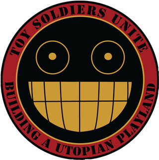

Dr. Steel

Doctor Steel (full name, Doctor Phineas Waldolf Steel) was a self-published American musician and internet personality from Los Angeles. He performed on rare occasions with a “backup band”, claiming that a fictitious robot band had malfunctioned. Shows incorporated puppetry, multimedia and performances by female members (“Nurses” and “Scouts”) of his street team, The Army of Toy Soldiers.
Biography
On stage, and in all public performances and interviews, Steel maintained the appearance of a mad scientist bent on conquering the world and becoming the future World Emperor. He claimed to be a former toymaker who, in a fit of rage over being fired for creating drastic designs such as babies with buzzsaws for hands, burned down the factory he worked at and was committed to a psychiatric institution. This back-story relates that Steel escaped the sanitarium and retreated to a deserted island laboratory, where he became bent on world conquest in order to create a “Utopian Playland” where his toy designs could be enjoyed. As a mad scientist, Steel is obsessed with conspiracy theories, giant robots, baking cupcakes and “mind control cookies”, and experimenting with hamsters.
In appearance, Steel drew on the mad scientist archetype, dressing in a white PVC lab coat (with comically large black buttons), black PVC gloves, black boots, shaved head, sinister goatee, and antique welder’s goggles. When not in his “mad scientist” costume, Steel typically dressed in a very aristocratic neo-Victorian steampunk style, while still retaining his goggles. He was never seen without the goggles.
Musical Career
Steel began publicly performing in 1999, essentially busking on the streets of Los Angeles. A few years later, he began performing at venues like The Key Club and the CIA. His live shows combined music with puppetry and video projection that reflect the stories and meanings of the songs.
In 2001 and 2002, the albums Dr. Steel (2001), Dr. Steel II: Eclectic Boogaloo (2001), and People of Earth (2002) were released digitally to iTunes, Amazon and other stores. The Dr. Steel Collection (2004) was the first CD release, featuring many tracks which were released on other albums, slightly altered. The Dr. Steel Collection also features the track "Land of the Lost," about the 1970s version of the show by the same name. Some attempts were made to get the song into the soundtrack of 2009 movie version of Land of the Lost, but they were unsuccessful.
Steel's second CD release was The Dr. Steel Read-A-Long Album (2006). It was a limited distribution and quickly sold out. The album art included a recreation of the sleeve of read-along records, and the disc design resembled that of a vinyl record. In 2007, Steel re-released the first three albums, once again in digital format.
Steel's music can often be heard on a number of steampunk radio broadcasts that stream worldwide, such as The Clockwork Cabaret. His song "Boogieman Boogie" was also included in a compilation of steampunk music released by Gilded Age Records.
Musical Style
Steel's music is eclectic in genre, often combining the noise and distortion of industrial with aspects of European folk, classical, and even jazz, as well as hip-hop and opera. Many songs feature samples from vintage public service announcements and educational films, such as Duck and Cover. Rue Morgue Magazine described the sound as "Industrial Hip-Hop Opera".
Retirement
In 2010, Dr. Steel announced plans to begin work on a new album, entitled "Toymonger." However, in July 2011, after a long period of silence, it was announced that Doctor Steel had retired from the music industry, and a personal letter from Steel to the current head of the Army of Toy Soldiers in January 2012 confirmed this. The Army of Toy Soldiers have decided to continue on as an organization, switching their focus from promoting the entertainer to promoting the philosophy he presented, such as the importance of creativity and building one's own Utopian Playland.
Army of Toy Soldiers
The Army of Toy Soldiers (formerly Dr. Steel's Army of Toy Soldiers; also known as Toy Soldiers Unite after the name of their website) was originally Dr. Steel's fan club and street team, and played into the Dr. Steel fiction, in that it was allegedly a tool in his plan for global domination. The Army considers itself a movement for social change, and since Steel's retirement it has continued as an organization dedicated to promoting Steel's social ideals.
The website for the organization, referred to playfully as the "digital bunker", was created by the then head of Dr. Steel's fan club, steampunk model and fashion designer Kate Lambert, aka "Sergeant Kato", in 2006. After Steel's retirement, Kato turned over the site to its current administrators, and most information regarding Steel was moved to an archive site.
Structure
The Toy Soldier Army has four main regiments: Toy Soldiers, Nurses, Toy Scouts and Engineers. (Originally, the Nurse and Scout regiments were reserved for females within the Army, whereas people of any gender could belong to the Toy Soldier regiment, but after Dr. Steel's retirement this was changed, and Nurses and Scouts became open to anyone.) The Army is further divided into divisions based upon geographical location as well as divisions based on creative interests ("Special Ops").
The Army is currently led by the two head admins of the website, one residing in the US and one in the UK.[35] There are no ranks — all Toy Soldiers are considered equal — although Toy Soldiers often give themselves fanciful "ranks" as part of the fun. However, Toy Soldiers who go "above and beyond" may be awarded the honorary title of "Yellow Jacket". Originally this title was given personally by Doctor Steel, but since Dr. Steel's retirement this award has been given out by the admins of the official website. To date, only 51 have achieved the status of Yellow Jacket.
Uniforms
Toy Soldiers wear paramilitary "uniforms" with patches and color schemes, but are encouraged to design their own uniform so long as the required patches and colors are used. The basic color scheme for soldiers is black with yellow trim, although red trim may also be used sparingly. Female nurses generally wear white nurse uniforms with red trim, although a brown military uniform with garrison cap is also worn (see inset image). Scouts generally wear beige tops and black skirts or slacks. Engineers generally wear black overalls or coveralls, or black or white lab coats.
The original "traditional" uniforms designed by Dr. Steel and Sgt. Kato were dieselpunk inspired. A new set of uniform concepts released on the Army's website in 2013, designed by Sgt. Grinner, have a decidedly more cyberpunk appearance.
Operations
Toy Soldiers continue to promote Dr. Steel's philosophy, individually through "missions", while larger group events are known as "operations" or "invasions". Some Soldiers use their connections and access to the media for promotion, while others may choose to "propagandize" their school or workplace. Toy Soldiers frequently do charity and volunteer work in uniform, such as starting local clothing or toy drives and even donating to drives such as Toys for Tots, Light the Night Walk and Adopt a Highway. The Toy Soldiers have their own holiday, "Toy Soldier Day," which is observed every year on March 4 (a play on "march forth"), and simultaneous invasions of Disney theme parks worldwide take place on the nearest Saturday to this day.
Promotional Material ("Propaganda")
Promotional material for the Toy Soldiers is referred to as "propaganda". The decision to use a term with such charged connotations was a deliberate satirical allusion to famous groups in the past who had plans for world domination, in order to spotlight or "hang a lampshade" on the tricks of mass manipulation. Some of the material was designed and created by Steel himself (such as the "propaganda posters", designed to resemble WWII propaganda posters), but Steel encouraged his fans to design their own propaganda as well.
Motto and Philosophy
The Army's motto, "Building a Utopian Playland", comes from the title of Dr. Steel's "Propaganda Video" of the same name, and expresses the group's core philosophy. Originally, it related to Steel's alleged plans to "take over the world", but also meant a metaphorical altering of one's own worldview through making having fun one's first priority and realizing one's creative potential, and the belief that if everyone did this, the world could be transformed. Steel called this concept a "world makeover".
Current Activities
Since the announcement of Dr. Steel's retirement, the Army of Toy Soldiers have continued on as an organization dedicated to spreading the philosophy Dr. Steel presented. The Dr. Steel "angry face" logo (and uniform patch) has been dropped, having been replaced with Steel's grinning robot head logo.
As an artistic network, the Army strongly encourages and supports independent artists and entertainers. The Army also continues to "invade" comic and steampunk conventions; they have had a regular fan tables at San Diego Comic Con and MCM Expo in London for several years now. Since 2010, the Toy Soldiers have participated yearly in the Doo Dah Parade in Pasadena, CA and have become "veteran crowd favorites." And in 2012, several members of the UK division were invited to participate in the filming of Professor Elemental's music video, "I'm British." The Army also has several semi-regular podcasts, which are released under the umbrella of the Toy Soldiers' YouTube channel, "TSU-TV".
In keeping with its nonprofit status in the UK, in 2013 the Army donated its surplus budget over operating expenses to the children's charity Child's Play. In 2014, the Army teamed with MPserv.net to run a 48 hour livestreamed Minecraft marathon called "Operation: Dig Deep", raising over $1000 for Child's Play.